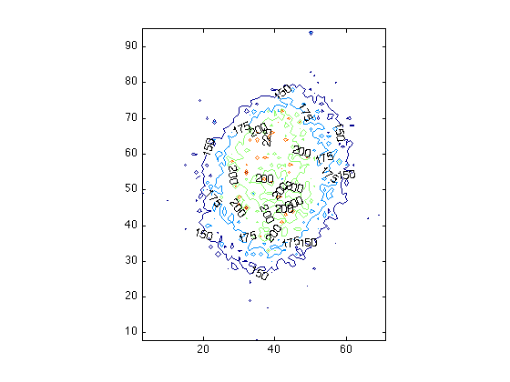

Contour maps
To display isolines of an image array, MATLAB has provided a handy function contour. Assuming PNE is our image array:
imagesc(PNE)
axis image
Don't forget to add axis image to avoid distortion!
Let's try make a contour image:
contour(PNE)
axis image
Note that image created by imagesc is flipped up-side-down compared to the one created by contour!
You may find out that this takes a long long time, maybe forever. Also, it looks messy! This is because when the values of the level curves and/or the number of contour lines are not specified by the user, contour will choose these values automatically. In our case, the emission from the object (the PNe) is not too much stronger than background (the sky); therefore even the weak fluctuations on the sky are shown in the contour map, which is not what we want.
One way to improve this contour map is to specify how many contour levels will be shown in the map:
contour(PNE, 5)
axis image
Then the messy background went away. However, the structure in the PNe also disappeared, because there's not enough contour level.
If we want to focus on the PNe itself, we might want to specify all values of the contour lines. First we'll need to know what's the range of the PNe emission; the easiest way to do so is to use colormap:
imagesc(PNE)
axis image
colorbar
Let's say we decide the range of values to be 150 to 250. Now we need a vector to include all values we want for the contour level, which are between 150 and 250. This can be easily achieved by using linspace:
help linspace
LINSPACE Linearly spaced vector.
LINSPACE(X1, X2) generates a row vector of 100 linearly
equally spaced points between X1 and X2.
LINSPACE(X1, X2, N) generates N points between X1 and X2.
For N < 2, LINSPACE returns X2.
Assuming now we have a vector V from V = linspace(...). Now we can re-make our contour map:
contour(PNE, V)
axis image
You can also add labels to each contour level. However, the numbers might be hard to see in this map, because the object is too small. Let's try make another map using ginput to define the area:
[a, b] = ginput(2)
a = 54.8971 127.2052 b = 81.7359 189.6570
(note that integers are reaured when used as indices)
PNE_zoomIn = PNE(82:190, 55:127);
imagesc(PNE_zoomIn)
axis image
Now we can add the labels to our contour map. To do this you'll need a slightly different command to create the contour map, because now we need to generate a contour matrix first:
[C, h] = contour(PNE_zoomIn, V);
axis image
The matrix C includes info which can be used in clabel:
clabel(C,h);
Now all contour lines are marked by their values.